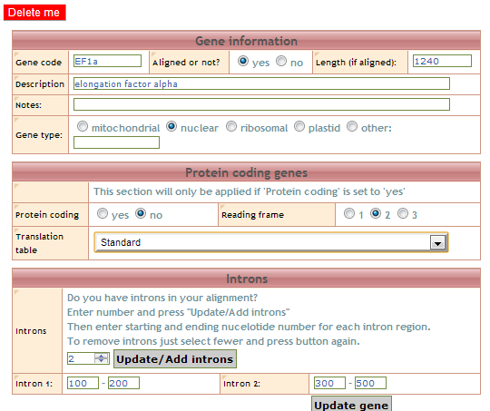
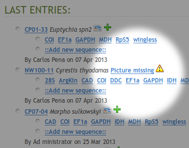

Welcome to VoSeq 2.0.0-beta documentation!¶
Getting help¶
- Try the FAQ – with answers to common questions.
- If you need help regarding installation or usage of th application, please contact Carlos Peña or Tobias Malm.
- You can also subscribe to VoSeq’s discussion list on Google Groups.
Welcome to VoSeq, a database to store voucher and DNA sequence data for phylogenetic analysis. It’s a unique database that enables to digitize biological data of museum specimens and molecular data such as DNA sequences, primers and genes.
VoSeq has tools that facilitate the batch upload of lots of voucher data and DNA sequences with a few clicks. It also has BLAST capabilities, meaning that you can find out whether one particular DNA sequence is most similar to other sequence in NCBI GenBank. You can also BLAST your sequence against all others in your VoSeq database (see BLAST plugin section for details).
VoSeq is written in Python. It uses PostgreSQL as database back-end and it is designed to run either locally in your own computer or on a remote (commercial) server service.
Start here¶
- VoSeq overview
- Find out what VoSeq can do. It might be right for you.
- Download to install VoSeq
- Install VoSeq on your computer or server.
- Configure VoSeq
- Create a
conf.jsonfile to specify your settings.
How to cite VoSeq¶
If you think VoSeq is useful and you happen to use it during your work, it would be great if you cite us as a source:
- Peña, C. & Malm, T. 2012. VoSeq: a Voucher and DNA Sequence Web Application. PLOS ONE, 7(6): e39071. doi
Using VoSeq¶
- Adding vouchers
- Learn how to create records for voucher specimens in VoSeq.
- Adding genes
- Adding sequences
- Create taxonset
- Create datasets
- Search
- Upload voucher photos
- Create Excel table
- Update voucher
Adding genes¶
The second thing after adding vouchers that should be done is to create new genes or “alignments” for your database. This must be done in order to be able to add sequences to the database. You can add a single record by going to the Administrator interface and clicking on the link Add/edit/view gene information, followed by Add gene‘.
{kind=link}
The most important and the only field that is obligatory is the gene code field, this will be the name of your gene when using the database. This could be a simple short version (e.g. COI for Cytochrome oxidase I) or any other name (no spaces allowed, but _ are ok). You can for example create a gene code for aligned data, say the barcode version of COI of 658 bp could be named COI_658 or similar. Other genecodes could be made for unaligned sequences (e.g. COI_raw).
First the gene/alignment have to be specified if aligned or not. For example may raw sequences be set to no (and these may be retrieved as FASTA-files, whereas if you want to build other datasets (Nexus, PHYLIP, TNT) they need to be set to aligned. If set to no, then other information regarding reading frames and such will be ignored!
Then (if aligned) you should include the length of an aligned gene - this will be used for dataset creation and will there warn for sequences longer than the specified length.
You may also add a description for the gene - these should be the full name of the gene (e.g. Cytochrome oxidase I) - as this field is used for example in creating tables to submit to GenBank.
Aligned genes may be set as protein-coding for additional prot-coding gene functionality when retrieveing datasets for example (e.g. position choices, translation).
For aligned protein coding (=yes) genes you may choose to specify the reading frame as well as the genetic code for translation - this will be used for dataset creation and is a must f you want to partition your genes according to codon positions or amino acids.
Introns may be added - enter number of introns in your alignment and click ‘update introns’, that will give new fields for entering starting and finsihing positions for your introns. (Remember that positions in an alignment here is counted from 1 and upwards).
Adding sequences¶
In the Administrator interface, the tool Upload batch sequences/vouchers allows you to upload DNA sequences into VoSeq. Along with the DNA sequences, you have to upload the required fields gene code and voucher code, optionalyl the primer names, laborator and creation date. Each sequence and its related data goes into one line, with fields separated by tabs. If you have your data in a spreadsheet such as MS Excel, you can copy and paste the data into the text area.
- It is important to use the same headers provided in the text area.
- It is also necessary that that the code of each sequence matches the code of voucher specimens that had been uploaded into VoSeq. This is the unique identifier that is used to connect the voucher data and their sequences.
(Aligned sequences should for best use of the database have missing data coded as questionmark (?) and gaps as a dash (-))

Create taxonset¶
Taxonsets is a way to make a list of taxa that are being used for a specific project or analysis. A Taxonset is just a list of voucher codes. By having Taxonsets, you can quickly create datasets and tables for them.
If you have not set Taxonsets you will need to type specimen codes everytime you create a dataset. Instead, if you have a Taxonset for a particular project, you could select it when creating Tables for manuscripts.
Go to the Administrator interface and click on the link Add/edit/view Taxon sets.
A taxonset must have a name in order to be saved and usable later!
You can create a Taxonset by entering a list of specimen codes, each separated by a return:

Or by browsing the data in VoSeq and choosing the specimens you are interested in by marking them in the X field:

Here you can sort the table according to choosen information (taxonomic level, code, X-marked or not), as well as choose genes to display information of. If you have choosen one or several genes, you can sort the table according to sequence availability for selected genes. You can also press mark all or unmark all to add or remove X’s to or from each taxa that are displayed (works well with filtering). In order to perform a filtering or after selection of a new genecode you must press Sort/Filter to proceed. Your already marked taxa will be remembered.
After completing your selection of taxa and adding name and descriptions - press the Add dataset button to save it. If you are updating an already existing taxonset - press Update taxon set.
Create datasets¶
We believe that one of VoSeq’s important features is the capability to create dataset files of molecular sequences that are ready-to-run in phylogenetic software such as MrBayes, TNT, PAUP, RaXML, etc.
Now that you have voucher and sequence data in your installation of VoSeq, you might want to create datasets for analysis of sequences in phylogenetic software.
In the user interface, you will find under the Tools section the link Create new dataset. You will be shown a page to select the sequences you want by entering the voucher codes and gene codes. You can select your data to be in several formats (FASTA, NEXUS, etc), choose between codon positions, as well as choosing what information your taxon names should include.
This will create a ready-to-use data set for analyses!

The Outgroup field, if needed, should include the voucher code for the chosen outgroup taxa.
- Codon positions
- Marking 1st, 2nd or 3rd and unmarking all positions will create a dataset with only the chosen position(s) for all genes. Special will take you to a new page where you will be able to choose which codon positions to include for each gene. Marking amino acids will tranlate protein-coding genes with a set genetic code , the others will be treated as normal dna, i.e. making “mixed” datatype in Nexus for MrBayes, and setting partitions correctly in Nexus and PHYLIP format. Note that codon position choices as well as translation to aminoacids are only able to function if the user have specified a reading frame for the chosen gene(s) (see Adding genes).
- Partition by (position)
- Here you can choose how to do partitioning for each gene. as one will create one partition per gene, regardless of which codon positions you include. each will create a partition per codon position, whereas 1st-2nd, 3rd will create one combined partition for the 1st and 2nd positions and one separate for the 3rd codon positions. Note that each and all are only possible to process with a per gene specified reading frame (see Adding genes).
You can also chose to omit taxa from a taxonset that contains less than a specific number sequences. Say you have a 10 gene data set and want to remove all taxa with 5 or less! Easy! Just eneter a minimum number of genes!
If you have introns in your alignment you can choose to include or remove them from the output data set. If included they will be treated as separate data blocks and partitions for the Nexus and PHYLIP outputs!
The voucher codes can be entered one by one (separated by return) in the text area or you could create a Create taxonset (a list of voucher codes for a specific project).
Note
As of version 1.5.0, protein-coding ability, aligned or not, introns and genetic code will be set for each gene/alignment in the admin gene section!
Search¶
You can search for records by queries using single fields or any combination of them. The autocomplete dropboxes will help you query existing data easily. This can be done in both the user interface and the administrator interface - where the latter have more options to search (e.g. record history).

Upload voucher photos¶
In the Administrator interface you will see that some records have the link Picture missing. By clicking on this link, you will be able to upload a photo for that voucher.
{kind=link}
If you want to replace an existing picture with another, you will need to click the Change picture icon.
After you upload your photo, VoSeq will automatically post the picture in Flickr and save the necessary URL addresses in the MySQL database. Thus, you will see your photo in the corresponding voucher page.
If you have not enabled the Flickr plugin, VoSeq will instruct you how to do this.
If you don’t want to use Flickr, you can host your photos locally on your own server or computer. For this you will need to edit a line in your conf.php file:
Change the line:
$photos_repository = 'flickr';to this one:$photos_repository = 'local';
Starting with version 1.5.0, VoSeq can host many photos for each voucher. Photos can be added in the voucher page using the administrator interface of VoSeq. You can delete photos individually by clicking on it’s “trash” icon.
Note
If you have more than two photos for voucher, all additional photos will appear at the bottom of the voucher page (see image below).

Create Excel table¶
You can create a MS Excel table with specimen codes, genus and species names, genes used in analysis along with their accession numbers.
Go to the User interface and under the Toolbox click on the link Create MS Excel table
Instead of typing your specimen codes in the text area below, you could select a Taxonset (provided that it has been set before (Create taxonset). This table will be ready to attach to a manuscript for publication.
You can also change the way sequence information is displayed in the table by choosing between number of bases (displays number of bases - does not count questionmarks ?), accession numbers (displays stored accession numbers instead of sequence length) or X/- (displays X if sequence is present and - if sequence is missing.
Display missing sequence beginnings/ends with star(*)?: will show search for questionmarks (?) in the beginning or end of the sequences (when displayed by number of bases) and show if the sequence misses bases in those positions with an asterisk (*). Easy then to see during laboratory phase then where sequence information might be missing for your taxa.
You may also change between comma (,) and tab-delimited table mode.

Update voucher¶
When you click on the code of an already existing voucher in the administrator interface you will be transferred to it’s voucher information page.
Here you may make changes to all the fields - and these will be updated after pressing Update record.
A changed voucher code will automaticly change the code in the connected fields for sequences and primer informations, so as to keep them connected.
There is also a record history displayed for administrators that list what changes have been made to the voucher information previously, with time and the user responsible for the changes.

Update VoSeq¶
The easiest way to update VoSeq (that does not require new install of software or database):
Download the new files from github.
- Unpack the new files to your webserver directory (htdocs, webserver, etc).
- Rename your old “in use” VoSeq folder something like, ‘VoSeq_old’ or similar (e.g. “VoSeq-1.4.4” -> “VoSeq_1.4.4_old”).
- Give the newly downloaded VoSeq folder the same name as the old one had (e.g. “VoSeq-1.4.4”).
- Copy the file “conf.php” (in main folder) from the old version (e.g. “VoSeq_1.4.4_old”) to the new version (e.g. “VoSeq_1.4.4”).
Also:
If you have used and installed blast files, make sure to copy the files Blastdb_aliastool, Blast, Makeblastdb and Makembindex (.exe for all in windows), from the old version (blast/bin folder) to the new version (same folder). Then set permissions to read, write, and execute on the folder “blast/bin” and its content, as well as the folder “include/blast” (e.g.
chmod 777 -R path_to/~VoSeq_folder/blast/bin) .- For Mac users it may work better to use the
sudo chown -R _www VoSeq_foldercommand instead, since files belong to user instead of root!
- For Mac users it may work better to use the
If you have voucher photos stored, transfer them from the old one to the new one also (in
picturesfolder).
Backup your MySQL database¶
You can make backup copies of your data by using a button in the administrator interface. You will get all your voucher info and sequences into a SQL file. If your server dies you can easily restore your database by importing one of your backups using the Import database button.

Plugins¶
Yahoo! Maps plugin¶
VoSeq is able to interact with Yahoo! Maps to create on-the-fly maps for vouchers when geographic coordinates are present in voucher pages.
After installing VoSeq, you can enable this capability by getting a Yahoo! Maps API key from them and writing them in your conf.php file:
Get an API key from http://developer.yahoo.com/maps/simple/
After filling in the required information you will be given a Consumer Key consisting of a long string of seemingly random characters that end with two dashes:
MwRGV2Jm1zbWNHbmnM9Y2Q9WVdrOVVHdj0yzlNQS0tJ9uc3VtZXJzZWNyZXQmeD1iMw--
Remove the two dashes from the end and copy your key into the
conf.phpfile as a value for the variable$yahoo_key. Like the example below, including quotations and semicolon:$yahoo_key = "MwRGV2Jm1zbWNHbmnM9Y2Q9WVdrOVVHdj0yzlNQS0tJ9uc3VtZXJzZWNyZXQmeD1iMw";
Save the file and exit.
After doing this, VoSeq will be able to pull maps from Yahoo! whenever there is geographic information in your database. Note that you need to enter the geographic coordinates into VoSeq converted into decimal format, using the sign minus for the Southern and Western hemispheres.
Flickr plugin¶
VoSeq hosts all the specimen photos in Flickr. If you have a free account you can host up to 200 photos. The Pro account allows you hosting unlimited number of photos for a yearly fee (25 USD).
You need to get an API key from Flickr.
Create and account in Flickr (if you don’t own one already)
Follow the instructions to get an API key, Secret key and Token key.
After submitting you will get your Key, Secret and Token. Write down those keys.
From a text editor software, edit the file
conf.phpby copying your keys in it.For example [these are not real keys and will not work if you use them]:
$flickr_api_key = "2d7f59f9aaa2d5c0a2782d7f5d9083a6";$flickr_api_secret = "ef0def0f3d5f3f15f1";$flickr_api_token = "61607157718372495-f5524ead33b43129";
Save and exit.
Thus, every picture that you upload into your VoSeq installation will be uploaded into your Flickr account.
Note
You can share your voucher photos with the Encyclopedia or Life. Sharing Photos with EOL
BLAST plugin¶
VoSeq has BLAST capabilities.
You can search for homologous sequences of your markers in GenBank. If you have a VoSeq installation in your work computer (or your server provider allows you to run the BLAST executable files), you do local BLASTs. For example, BLAST any or your sequences against all sequences of the same gene, or against all your sequences (full BLAST). Click on the “BLAST” icons in your voucher’s pages:

You can also copy and paste any new sequence into VoSeq’s Blast new sequence tool and see whether there are any similar sequence in your data (this tool is located on the sidebar on the right).
Remember that you need to download from NCBI the stand alone BLAST executable files and copy/install them in one of VoSeq’s folders:
In Mac OS X: when you install from the .DMG package, the executable files will be written in the folder:
/usr/local/ncbi/blast/bin. You just need to copy them to the right folder in VoSeq:mkdir ~/Sites/VoSeq/blast/bincp /usr/local/ncbi/blast/bin/* ~/Sites/VoSeq/blast/bin/.
In Linux:
/path/to/your/VoSeq/blast/bin/In Windows:
C:\Program Files\Apache Software Foundation\Apache2.2\htdocs\VoSeq\blast\bin\It is important that the executable files are placed inside the folder bin.
Integration with EOL¶
- VoSeq makes it easy to share your voucher photos with EOL. More information here Sharing Photos with EOL.
- VoSeq makes automated calls to EOL’s web services for pulling information on authors and date of description for species. VoSeq sends genus and species names and waits for a response. If EOL response is positive, the full species name will be included in voucher pages:

Sharing Photos with EOL¶
VoSeq makes it easy to share your voucher photos with EOL. You can submit your best photos to EOL from VoSeq with just one click.
If you haven’t done it already, you need to create an account in Flickr. Then log in to Flickr with your account and join the EOL group:
- Go to http://www.flickr.com/groups/encyclopedia_of_life
- Click “Join This Group”
Be aware that EOL requires that your photo is under any of the following licenses:
- Creative Commons Attribution (CC-BY)
- Creative Commons Non-Commercial (CC-BY-NC)
- Creative Commons Share-Alike (CC-BY-SA)
- Creative Commons Non-Commercial Share Alike (CC-BY-NC-SA)
In your VoSeq installation, you will see a button:
{kind=link}
under your voucher photos. If you click this button, VoSeq will add a “machine tag” to the corresponding page in Flickr so that in can be harvested by EOL.
Thus you will be able to see your photo in EOL’s pool of photos in their Flickr account http://www.flickr.com/groups/encyclopedia_of_life/pool/with/4096153224/
EOL harvests the photos quite frequently, so in one day or two, you will be able to find your photo in the respective page in EOL.
Integration with GBIF¶
GBIF prefers data owners to use their Integrated Publishing Toolkit (IPT). This means that you can install their IPT software to produce a resource in Darwin Core format that can be harvested by GBIF. In addition to the actual data in your VoSeq installation, IPT allows you to include a rich variety of metadata for GBIF.
VoSeq is able to produce a dump file containing all the data you own. Then you can import this file into a IPT installation and choose which types of data you want to publish via GBIF. Once you include all the metadata required by GBIF you have two choices in order to expose your data taken from GBIF website:
By setting up a dynamic server software:
Acquire hardware with a permanent Internet connection (a regular PC is sufficient).
Install data publishing software. GBIF recommends the Integrated Publishing Toolkit (IPT). You will need a web server such as Apache.
Configure the software for your local data structure; this is the ‘mapping’ process. Please follow the documentation of your chosen publishing software for this process.
Register your service with GBIF and sign the GBIF Data Sharing Agreement.
Create an archive for your entire dataset:
- This scenario doesn’t require a permanent Internet connection. You simply need to create a Darwin Core Archive, upload it to a repository (for example an IPT repository installed by your GBIF Participant Node, an institutional FTP or web server, or a service like Dropbox or the Internet Archive). You then just need to register the public URL for the storage location of your archive with GBIF.
- You can create a dump file with all the data in your VoSeq installation for submitting to GBIF. In VoSeq, on the sidebar on the right, click on Share data with GBIF. Save this file and open an installation of IPT.
- In IPT, click on Manage Resources in the top menu, enter a name for your resource and click Create. Note: do not upload your file in this page (it will fail to recognize your tab delimited dump file).

- You will be directed to your test resource page. This is when you upload the dump file generated in VoSeq. And then you are ready to add a rich variety of metadata to your resource and become a provider of information to GBIF.